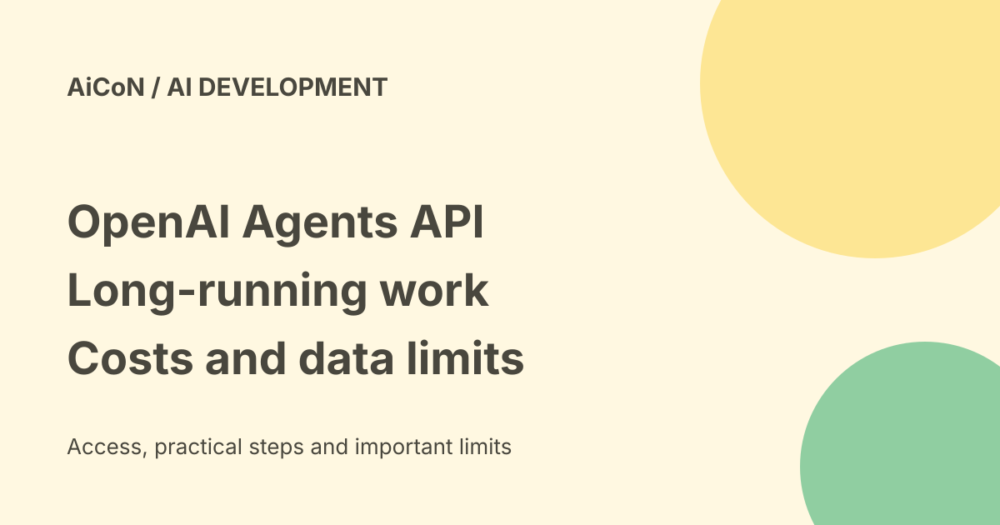

OpenAI Agents API: beta sessions, usage costs and US data limits
The Agents API is a developer service for building AI workers that can continue across turns and use tools. It is not a free consumer chatbot. OpenAI manages much of the running process, but developers still own permissions, costs and review of real-world actions.

What the API is
OpenAI announced the Agents API in public beta on 10 September 2026. An API is a service your software calls. Here it runs an agent through a managed harness: the software loop around the model that keeps track of a task, tool calls and progress. Developers configure a model, instructions, tools and execution environment rather than writing every part of that loop themselves.
Sessions are durable, meaning your application can continue them across turns without rebuilding the whole conversation. Context compaction condenses older material when it grows too large. The system can split work among configured subagents. These features can support long tasks, but the launch's hours-or-days wording is not a promise that any particular job will finish successfully.
Tools and environments
The documented service connects to developer functions, MCP servers and supported built-in tools. MCP is a connection format for tools and outside services. Data sent to an outside MCP service follows that service's policies, not only OpenAI's.
You can use an OpenAI-hosted sandbox, a developer-operated environment or a supported environment provider. A sandbox is a separate place for running code and files. It is a useful boundary, not permission for the model to touch production systems. Review filesystem, network and credential access for the actual environment you choose.
Cost: no extra platform fee is not free use
The launch says there is no additional Agents API fee. The current overview says model usage follows the selected model's API rates, OpenAI tools use their standard rates, and hosted sandboxes use container rates. Your own or partner environment can have separate bills.
A task may make many model and tool calls. Subagents, retries and longer sessions can increase the bill. A ChatGPT subscription is not a blanket API credit grant. Check the current pricing page for your selected model, context size, cache behavior, tools and container before a test. We did not verify a free allowance or an India rupee checkout price.
Data stays in the US for this beta
The current Agents API overview states that its data residency support is United States only. It does not support Zero Data Retention, often shortened to ZDR. Choosing your own sandbox does not make this API eligible for ZDR. For an Indian team handling confidential, regulated or location-restricted data, this can rule out a workflow even when the code runs locally.
The API data-controls table lists the agents endpoint as not used for model training, with 30-day abuse-monitoring retention and application state kept until deleted. No-training is not the same as no-storage. Delete sessions and published artifacts when no longer needed and confirm which objects, logs and outside providers remain. Do not assume deleting one session removes every copy in all connected systems.
A safe first developer trial
- Read the current overview and quickstart. Confirm the beta route and model you plan to use.
- Use a separate test project with non-sensitive sample data.
- Estimate model, tool and sandbox costs. Set application-level limits and watch actual usage rather than relying on a task description to cap spending.
- Start with narrow read-only tools and a disposable environment. Avoid production credentials.
- Add explicit human approval before email sends, purchases, deletions or updates to live systems.
- Inspect the traces and result, test failures, and delete unneeded session artifacts.
These are preparation steps, not a hands-on test. We did not create an account, provision a sandbox, call the API or measure latency from India.
How it differs from a library or chatbot
A consumer chatbot is an app you talk to. The Agents API is something developers build into their own app. An agent SDK is a code library for building a running loop; the managed API instead provides a hosted running service. Similar names do not imply the same permissions, storage or deployment behavior. Follow the documentation for the exact route you use.
Frequently asked questions
Can any developer access it?
The launch describes public beta access for all developers. Account, model, billing and policy requirements still apply. We did not test a new account.
Is it free?
No separate API platform fee does not remove model, tool or compute charges.
Does self-hosting the sandbox keep every byte local?
No. The managed API still has the documented US residency and no-ZDR limits.
Can I leave it unattended?
Not safely merely because it supports durable work. First test permission gates, spending limits and failure handling.
What changed since the earlier post?
The archived public-beta description is retained, with costs separated from the no-extra-fee claim. This guide adds US-only residency, no-ZDR support even with your own sandbox, stored state and practical approval gates. The beta and its supported features may change; re-read current documentation before production use.
Sources: Official launch · Current API overview · API pricing · API data controls. Checked 8 October 2026.